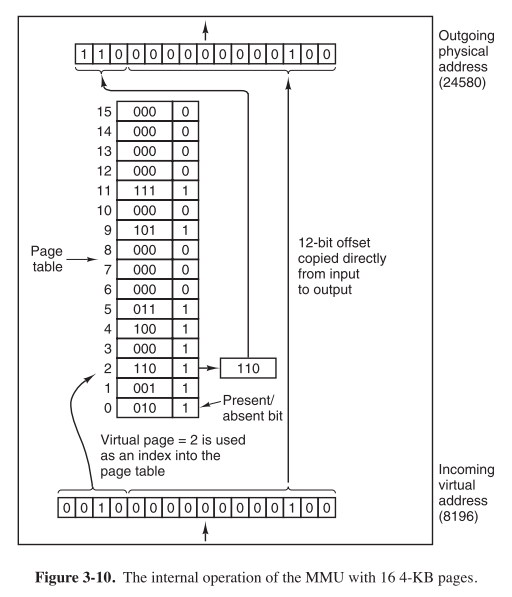
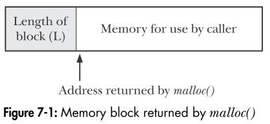
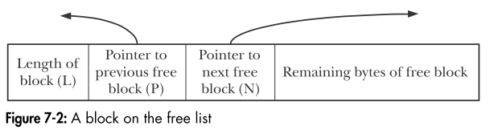

Linux系统编程
简介(1)
众成技术聚乐部 / 夏永锋
声明
此分享内容仅为学习总结，并非实战经验，若有不对之处，欢迎批评指正！

系统编程概念
操作系统内核
- 进程调度
- 内存管理
- 提供了文件系统
- 创建和终止进程
- 对设备的访问
- 联网
- 提供系统调用应用编程接口
系统调用
- 应用程序通过调用C语言函数库中的外壳（wrapper）函数，发起系统调用;
- 对系统调用中断处理程序来说，外壳函数必须保证所有的系统调用参数可用。通过堆栈，这些参数传入外壳函数，但内核却希望将这些参数置入特定寄存器。因此，外壳函数会将上述参数复制到寄存器;
- 由于所有系统调用进入内核的方式相同，内核需要设法区分每个系统调用。为此，外壳函数会将系统调用编号复制到一个特殊的CPU寄存器（%eax）中;
- 外壳函数执行一条中断机器指令（int 0x80），引发处理器从用户态切换到内核态，并执行系统中断0x80（十进制数128）的中断矢量所指向的代码。
- 为响应中断0x80,内核会调用 system_call() 例程（位于汇编文件 arch/i386/entry.S 中）来处理这次中断，具体如下：
- 在内核栈中保存寄存器值
- 审核系统调用编号的有效性
- 以系统调用编号对存放所有调用服务例程的列表（内核变量 sys_call_table ）进行索引，发现并调用相应的系统调用服务例程。如果系统调用服务例程带有参数，那么将首先检查参数的有效性。随后，该服务例程会执行必要的任务，这可能涉及对特定参数中指定地址处的值进行修改，以及在用户内存和内核内存间传递数据。最后，该服务例程会将结果状态返回给 system_call() 例程。
- 从内核栈中恢复各寄存器值，并将系统调用返回值置于栈中
- 返回至外壳函数，同时将处理器切换回用户态。
- 若系统调用服务例程的返回值表明调用有误，外壳函数会使用该值来设置全局变量errno。然后，外壳函数会返回到调用程序，并同时返回一个整型值，以表明系统调用是否成功。
所有的系统调用都是以原子操作方式执行的。之所以这么说，是指内核保证了某系统调用中的所有步骤会作为独立操作而一次性加以执行，其间不会为其他进程或线程所中断。
文件I/O
所有执行I/O操作的系统调用都以文件描述符（一个非负整数）来指代打开的文件。文件描述符用以表示所有类型的已打开文件，包括管道、FIFO、socket、终端、设备和普通文件。针对每个进程，文件描述符都自成一套。

// 调用成功则返回文件描述符，否则返回-1
int open(const char *pathname, int flags, ... /* mode_t mode */);
ssize_t read(int fd, void *buffer, size_t count);
// 调用成功则返回写入的字节数，否则返回-1
ssize_t write(int fd, void *buffer, size_t count);
// 当一进程终止时，将自动关闭其已打开的所有文件描述符
// 成功则返回0，否则返回-1
int close(int fd);
// 成功则返回新的文件偏移量，否则返回-1
// whence：SEEK_SET, SEEK_CUR, SEEK_END
off_t lseek(int fd, off_t offset, int whence);
// 举例：shell命令中的输出重定向
// dup()调用复制一个打开的文件描述符oldfd, 并返回一个新描述符，二者都指向同一打开的文件句柄。系统会保证新描述符一定是编号值最低的未用文件描述符
int dup(int oldfd);
// dup2()系统调用会为oldfd参数所指定的文件描述符创建副本，其编号由newfd参数指定。如果由newfd所指定编号的文件描述符之前已经打开，那么dup2()会首先将其关闭
int dup2(int oldfd, int newfd);
int dup3(int oldfd, int newfd, int flags);
对于每个进程，内核都提供有一个特殊的虚拟目录/dev/fd。该目录包含“/dev/fd/n”形式的文件，其中n是与进程打开的文件描述符相对应的编号。
/dev/fd实际上是一个符号链接，链接到Linux专有的/proc/self/fd目录。后者又是Linux特有的/proc/PID/fd目录族的特例之一。
进程
从内核角度看，进程由用户内存空间(user-space memory)和一系列内核数据结构组成，其中用户内存空间包含了程序代码及代码所使用的变量，而内核数据结构则用于维护进程状态信息。记录在内核数据结构中的信息包括许多与进程相关的标识ID、虚拟内存表、打开文件的描述符表、信号传递及处理的相关信息、进程资源使用及限制、当前工作目录和大量的其他信息。
为每个进程所分配的内存由很多部分组成，通常称之为“段”（segment）
- 文本段：包含进程运行的程序机器语言指令。只读、可共享
- 初始化数据段：包含显式初始化的全局变量和静态变量。当程序加载到内存时，从可执行文件中读取这些变量的值
- 未初始化数据段：包含未进行显式初始化的全局变量和静态变量。程序启动之前，系统将本段内所有内存初始化为0
- 栈：一个动态增长和收缩的段，由栈帧（stack frames）组成。系统会为每个当前调用的函数分配一个栈帧。栈帧中存储了函数的局部变量、实参和返回值
- 堆：可在运行时（为变量）动态进行内存分配的一块区域

每个进程都有一个进程号（PID），进程号是一个正数，用以唯一标识系统中的某个进程。Linux内核限制进程号需小于32767。新进程创建时，内核会按顺序将下一个可用的进程号分配给其使用。每当进程号达到32767的限制时，内核将重置进程号计数器，以便从小整数开始分配。
pid_t getpid(void);
pid_t getppid(void);
每个进程的父进程号属性反映了系统上所有进程间的树状关系。所有进程的始祖为1号进程-init进程。使用pstree命令可以查看进程树。
虚拟内存方案将每个程序使用的内存切割成小型的、固定大小的“页”(page)单元。相应地，将RAM划分成一系列与虚存页尺寸相同的页帧。任一时刻，每个程序仅有部分页需要驻留在物理内存页帧中。这些页构成所谓的驻留集（resident set）。若程序欲访问的页面目前并未驻留在物理内存中，将会发生页面错误（page fault），内核即可挂起进程的执行，同时从磁盘中将该页面载入内存。
为支持虚存方案，内核需要为每个进程维护一张页表。页表中的每个条目要么指出一个虚拟页面在RAM中的所在位置，要么表明其当前驻留在磁盘上。
虚拟内存的实现还需要硬件中分页内存管理单元（PMMU）的支持。PMMU把要访问的每个虚拟内存地址转换成相应的物理内存地址，当特定虚拟内存地址所对应的页没有驻留在RAM中时，将以页面错误通知内核。
每个进程都有与其相关的称之为环境列表的字符串数组。其中每个字符串都以“名称=值”（name=value）形式定义。
新进程在创建之时会继承其父进程的环境副本。环境提供了一种将信息从父进程传给子进程的方法。
环境变量的常见用途之一是在shell中。通过在自身环境中放置变量值，shell就可确保把这些值传递给其所创建的进程，并以此来执行用户命令。
可以通过设置环境变量来改变一些库函数的行为。
printenv命令可用于显示当前的环境列表。
通过Linux专有的/proc/PID/environ文件检查任一进程的环境列表。
在C语言程序中，可以使用全局变量char **environ访问环境列表。
另外，还可以通过声明main()函数中的第三个参数来访问环境列表：
int main(int argc, char *argv[], char *envp[])
// 从进程环境中检索单个值
char *getenv(const char *name)
// 向调用进程的环境中添加一个新变量，或者修改一个已经存在的变量值
// 参数string是指向name=value形式字符串的指针
int putenv(char *string)
// 可以替代putenv()函数，向环境中添加一个变量
int setenv(const char *name, const char *value, int overwrite)
// 从环境中移除由name参数标识的变量
int unsetenv(const char *name)
// 清除整个环境
int clearenv(void)
“非局部”（nonlocal）是指跳转的目标为当前执行函数之外的某个位置。
C语言的goto语句存在一个限制，即不能从当前函数跳转到另一个函数。
/*
setjmp()调用为后续由longjmp()调用执行的跳转确立了跳转目标。
该目标正是程序发起setjmp()调用的位置。从编程角度看来，调用longjmp()后，看起来就和从第二次调用setjmp()返回时完全一样。
通过查看setjmp()返回的整数值可以区分setjmp调用是初始返回还是第二次“返回”。
初始调用返回值为0，后续“伪”返回的返回值为longjmp()调用中val参数所指定的任意值。
*/
// 首次调用时返回0，通过longjmp调用后执行返回非0值
int setjmp(jmp_buf env);
void longjmp(jmp_buf env,int val);
/*
这两个函数的参数env为成功实现跳转提供了黏合剂。setjmp()函数把当前进程环境的各种信息保存到env参数中。
调用longjmp()时必须指定相同的env变量，以此来执行“伪”返回。
由于对setjmp()和longjmp()的调用位于不同的函数中，所以应该将env参数定义为全局变量。
*/
调用setjmp()时，env除了存储当前进程的其他信息外，还保存了程序计数寄存器（指向当前正在执行的机器语言指令）和栈指针寄存器（标记栈顶）的副本。这些信息能够使后续的longjmp()调用完成两个关键步骤的操作：
- 将发起longjmp()调用的函数与之前调用setjmp()的函数之间的函数栈帧从栈上剥离（解开栈），这是通过将栈指针寄存器重置为env参数内的保存值来实现的。
- 重置程序计数寄存器，使程序得以从初始的setjmp()调用位置继续执行。同样，此功能是通过env参数中的程序计数寄存器保存值来实现的。
内存分配
这里说的“内存分配”是指“进程通过改变堆（栈）的大小进行内存分配”。
传统的UNIX系统提供了这两个操纵program break的系统调用，Linux中也可以用，但现在代码中很少直接使用。
// 将program break设置为参数end_data_segment所指定的位置
// 由于虚拟内存以页为单位进行分配，end_data_segment实际会四舍五入到下一个内存页的边界处
int brk(void *end_data_segment);
// 将program break在原有地址上增加从参数increment传入的大小
// 成功则返回上一个program break的位置，否则返回(void *)
// 调用sbrk(0)将返回program break的当前位置，对其不做改变
void *sbrk(intptr_t increment);
一般情况下，C程序使用malloc函数族在堆上分配和释放内存。
// 在堆上分配size字节大小的内存，并返回指向新分配内存起始位置处的指针，其所分配的内存未经初始化
void *malloc(size_t size);
// 释放ptr参数所指向的内存块，该参数应该是之前由malloc()或其他类似堆内存分配函数所放返回的地址
void free(void *ptr);
一般情况下，free()并不降低program break的位置，而是将这块内存添加到空闲内存列表中，供后续的malloc()函数循环使用。
仅当堆顶空闲内存“足够”大（且完整连续？）的时候，free()函数的glibc实现会调用sbrk()来降低program break，至于“足够”与否则取决于malloc函数包行为的控制参数。
malloc()首先会扫描之前由free()所释放的空闲内存块列表（这是针对进程自己的虚拟内存），以求找到尺寸大于或等于要求的一块空闲内存。如果这一内存块的尺寸正好与要求相当，就把它直接返回给调用者。如果是一块较大的内存，那么将其进行分割，在将一块大小相当的内存返回给调用者的同时，把较小的那么空闲内存块保留在空闲列表中。
如果在空闲内存列表中根本找不到足够大的空闲内存块，那么malloc()会调用sbrk()以分配更多的内存。为了减少对sbrk()的调用次数，malloc()并非只是严格按所需字节数来分配内存，而是以更大幅度（以虚拟内存页大小的数倍）来增加program break，并将超出部分置于空闲内存列表。
当free()将内存块置于空闲列表之上后，如何知晓内存块的大小？
当malloc()分配内存块时，会额外分配几个字节来存放记录这块内存大小的整数值。该整数位于内存块的起始处，而实际返回给调用者的内存地址恰好位于这一长度记录字节之后：
当将内存块至于空闲内存列表（双向链表）时，free()会使用内存块本身的空间来存放链表指针，将自身添加到列表中：

// 参数numitems指定分配对象的数量，size指定每个对象的大小
// calloc()返回这块内存起始处的指针。与malloc()不同，calloc()会将已分配的内存初始化为0
void *calloc(size_t numitems, size_t size);
// 用来调整（通常是增加）一块内存的大小，而此块内存应是之前由malloc包装哦和那个函数所分配的
/*
通常情况下，当增大已分配内存时，realloc()会试图去合并在空闲列表中紧随其后且大小满足要求的内存块。
若原内存块位于堆的顶部，那么realloc()将对堆空间进行扩展。
如果这块内存位于堆的中部，且紧随其后的空闲内存空间大小不足，realloc()会分配一块新内存，
并将原有数据复制到新内存块中。最后这种情况最为常见，还会占用大量CPU资源，所以一般情况下，应尽量避免调用realloc()
*/
void *realloc(void *ptr, size_t size);
根据定义，当前调用函数的栈帧位于栈的顶部，因此，帧的上方存在扩展空间，只需修改栈的栈顶指针即可。
void *alloca(size_t size);
注意：不能在一个函数的参数列表中调用alloca()，否则会使alloca()分配的栈空间出现在当前函数参数的空间内，但函数参数都是位于栈帧的固定位置的。
相比malloc()，alloca()的优势有：速度更快（编译器将alloca()作为内联代码处理，并通过直接调整栈指针来实现）、无需手动释放内存